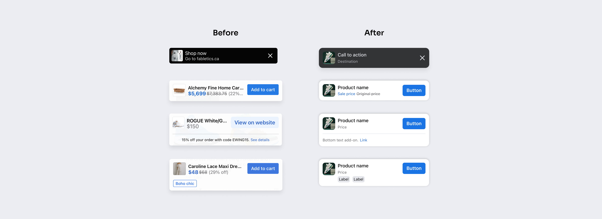
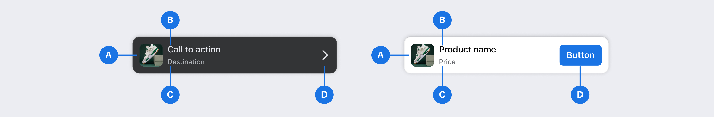
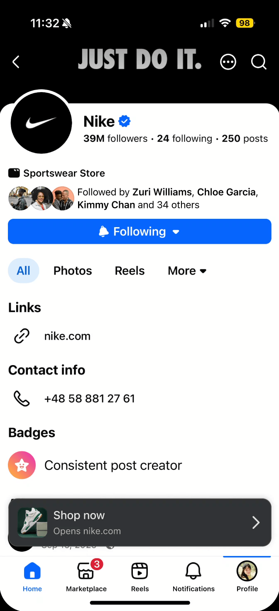
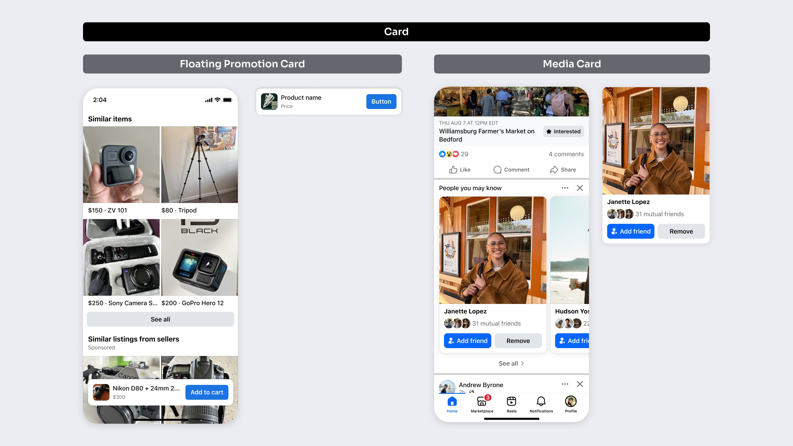
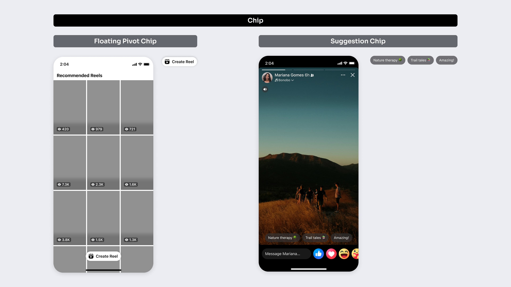

TL;DR
I led the end-to-end design of 7 new components for 3B+ users in support of the unification effort. This
made Facebook consistent, accessible, and ensured designers actually knew how to use the system,
creating:
+$300M in incremental revenue,
7% to 85% design system adoption on the highest-traffic surfaces,
Adoption by 191 teams
Team
7 designers, 21 engineers
The Challenge
In 2023, Facebook App prioritized component unification to reduce technical overhead and improve both user and developer experiences. Fragmentation caused slower developer times from repeat work, complicated and inconsistent user experiences, and fewer positive app recommendations.

My Role
As the lead product designer for 7 components, I worked through ambiguity and complexity to ship interactive Figma components and variants, usage guidance and principles, documentation and taxonomy, accessibility and component specs.
• Partnered and aligned on needs with multiple product teams
• Collaborated with engineers on spec properties and component build
• Owned components long-term (subject-matter expert), evolving them as needed
Process

A snapshot of my components

Component Deep Dive
Creating Order from Chaos
Floating Promotion Card is the most prominent action a user can take on a page.
Visual distinctions were rationalized by interaction behaviour, creating 2 core variants:
Default: Appears immediately. Since it is more prominent on the surface, the controls are limited to focus on the whole card as an action.
On-scroll: Appears upon scroll. The purpose is to highlight key details, so there are more controls available to encourage users to take action.


I connected the unique needs and use cases of 3 product teams into 1 component infra and identity. This gave Monetization, Shop PDP, and Business Messaging teams a source of truth—preventing 3 custom components with visual and architectural differences, and giving users a consistent, familiar and dependable experience.

Firm Guardrails
As a revenue driver and noticeable attention lever, this component needed scalable
and
clear guardrails to prevent misuse, and minimize disruption and clutter for users.
I defined rules in component documentation:
- Floating Promotion Card can only be used if it is the most important action on a screen.
- It must be used for marketing purposes only.
- It can't be used to promote Facebook features or surfaces. Use Quick Promotions instead.
- Usage needs approval from Blueprint, the Facebook design system team. Designers must post a ticket to the Blueprint Support group.
For app-wide consistency, the component anatomy locked sizing, and required add-ons like A) profile photo, B) headline text, C) secondary text, and D) icon button or button.

Just Enough Flexibility
At the same time, certain spec properties needed enough flexibility to make the component viable in the future. I gave the icon button flexibility to be swapped with other icons, like the cross. Supporting card dismissal ensures users can focus on core experiences without distraction. This decision paid off years later because it gave a foundation to add a ‘swipe down to dismiss’ gesture, when product teams expressed interest via Blueprint Support.
Spotting an opportunity to improve the UX and make the component interaction more intuitive, I partnered with the product team to add this gesture using the correct motion tokens, creating an updated, system-compliant spec and a strengthened relationship with product teams.

Taxonomy: Making a Floating Family
As Floating Promotion Card was defined, another floating component was being sculpted by a teammate. I spotted an opportunity to assess the relationship between the two, partnering to assess commonalities and differences. This led to 1) renaming both components for specificity, 2) creating a floating component family.
Specificity in naming eliminates confusion from an intuitive understanding of component differences and jobs to be done.
- Floating Promotion “Card” because it visually resembles one (e.g. Media Card) and wraps around sub-components like buttons, providing a linear path.
- Floating Pivot “Chip” because it visually resembles one (e.g. Action Chip) and used for non-linear, forking paths.
Defining a Floating Action family in our component documentation thus helps designers navigate our component library and select the right component easier.


Reflection
This effort emphasized making intentional decisions in the face of complexity and ambiguity by considering systems-level factors thoroughly, both current and future. What is best for the user, design system, business, and aligned to product paradigms. What can help designers adopt the system correctly, clearly, and easily.
Owning a component as a subject-matter expert is a springboard for more influence and scaling up impact. Watching for and evaluating opportunities to partner with product teams to evolve components can deliver more user value in ways that fit the larger ecosystem.